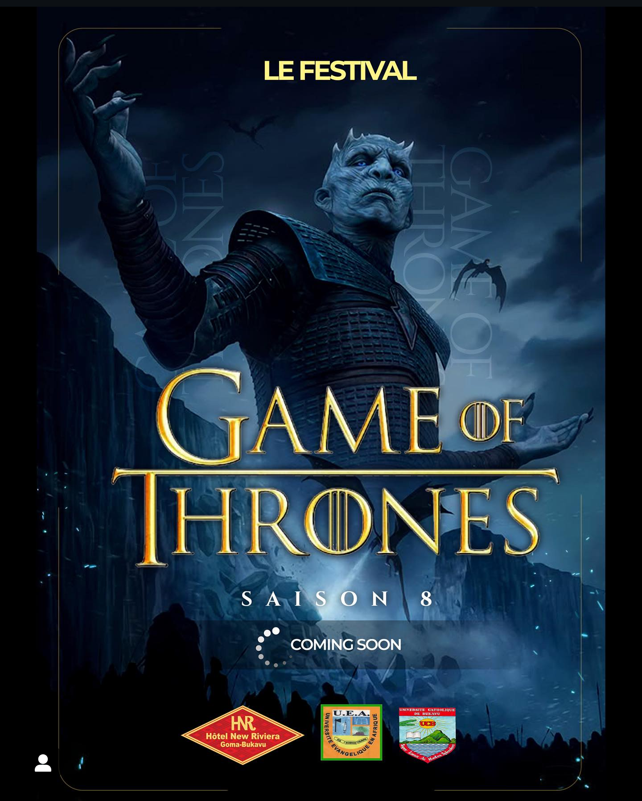

A bukavu les étudiants de 1'Universite Evangelique en Afrique "UEA" ne cessent de surprendre par leur créativite et leur dynamisme.cette fois ,ils nous plongent dans l'univers épique de la célebre serie game of trones à travers un festival unique,organiser pour faire vivre à la population locale une experience à la fois culturelle ,ludique et inoubliable.
ce festival game of Throne est bien plus qu'un simple évenement de divertissement .il s'agit d'une rencontre autour de la passion pour l'art,la fiction et l'imaginaire
A travers cette initiative ,les etudiants de l'UEA montrent qu'ils ne sont pas seulement des apprenants; mais aussi des acteurs culturels capable de mobiliser,de resembler et d'animer leur ville. ce festival est l'occasion pour eux de faire rayonner leurs talents et de créer entre jeunes et moins jeunes ,fans ou simples curieux une bonne humeur.
En organisant ce festival,les etudiants veulons rappeler que la culture peut etre un excellent moyen de rassembler les gens, de faire rever,mais qussi de reflechir ensemble aux valeurs comme le courage,la loyaute,la strategie,ou encore la quete du pouvoir...autant de themes que game of thrones met en avant,et qui trouvent un echo dans la realité quotienne
Apres le succes retentissant de ces saisons passées ,l'aventure ne
fait que commencer!
Nous,etudiants de l'uea ,nous vous resrvons une
huitieme edition encore plus intense,plus epique... et surtout
,pleine de surprises.
Pour la prochaine édition du festival game of thrones -bukavu,un espace magique est déja en préparation,des artistes speciaux,des animations inedites.des decors encore plus immersifs,et des moment forts en emotions vous y attendent 
Que vous soyez fans,ou simplement curieux de vivre une experience hors du commun,preparez vous !
le Game of thrones n'a pas encore livré tous ses secrets
Le festival game of throne à deja fait vibrer bukavu a sept reprises,grace a l'energie ,l'imagination et le talent des etudiants.Septs editions marquées par des activités originales et une ambiance tout simplement inoubliable
Depuis ses débuts,le festival Game of Thrones a su marquer les ésprits grace à la qualité des préstations artistiques qui l'ont animé.
Les sept premeiers saisons ont été rendues mémorables par les talents incroyables ,venus de bukavu,et d'ailleurs,qui on su incarnés l'univers avec passion,créativite et energie.
A tous ces artistes qui ont accepte de monter sur scene,de transformer le public dans un autre monde: un immense merci.
C'est grace à vous que les spectateurs ont pu rever,vibrer,s'emerveiller et s'evader le temps d'un weekend.vos prestations ont donna vie à ce festival et ont posé les fondations d'un évenement culturel devenu aujourd'hui incontournable dans la ville de bukavu.